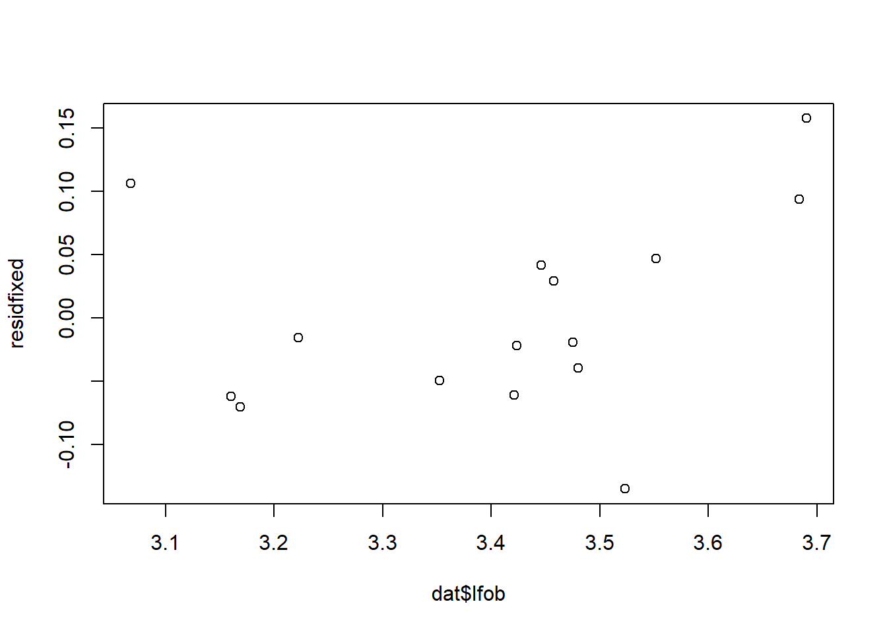

CPO merupakan salah satu komoditas ekspor unggulan Indonesia, hal ini dibuktikan dengan Indonesia menjadi negara pengekspor CPO No. 1 di Dunia. Hal demikian sangat berarti untuk pertumbuhan ekonomi nasional, karena keterkaitannya dengan penerimaan negara, ekspor CPO serta seluruh neraca pembayarannya.
Perkembangan data ekspor CPO cenderung stabil sebagai dampak adanya kegiatan ekspor minyak sawit dan turunannya yang mengikuti skema kontrak jangka panjang.
Baru-baru ini pemerintah menerapkan pembatasan ekspor produk CPO beserta turunannya dikarenakan terjadinya kelangkaan minyak goreng di Indonesia. Awal mula hal ini terjadi adalah karena tingginya pemermintaan pasar luar negeri pada tahun 2020 yang juga menyebabkan tingginya harga jual ekspor CPO dan turunannya.
1.2 Ruang lingkup
Berdasarkan data ekspor gas dari tahun 2017 hingga 2021 dari Badan Pusat Statistik kita dapat melihat bahwa partner dagang utama dari Indonesia untuk komoditas CPO adalah India, Cina, dan Pakistan. India merupakan negara utama pengimpor CPO karena komoditas ini digunakan untuk industri yang dimiliki negara tersebut. Ekspor CPO Indonesia ke India paling tinggi di antara negara lainnya. India, Cina, dan Pakistan memiliki jumlah permintaan yang terbilang konstan setiap tahun dan secara rata – rata terus meningkat dibanding dengan negara – negara lain. Dapat disimpulkan bahwa partner dagang Indonesia adalah ketiga negara tersebut yakni India, Cina, dan Pakistan. Dalam kegiatan perdagangan mengenal teori gravity model, dimana teori tersebut diambil dan dimodifikasi dari teori gravitasi Newton. Model gravitasi merupakan suatu model untuk mengukur arus perdagangan antar daerah atau negara secara makro. Model gravitasi memuat GDP sebagai faktor penarik perdagangan dan jarak dalam gravity model merupakan proksi dari biaya transportasi, dimana dapat dilihat bahwa jarak dari ke 3 partner dagang utama meskipun berdekatan namun memiliki jarak masing – masing dan yang memiliki jarak terjauh adalah Pakistan.
1.3 Rumusan masalah
Seberapa berpengaruh DMO terhadap ekspor CPO di Indonesia.
Pengaruh GDP perkapita Indonesia terhadap Ekspor CPO.
Pengaruh GDP Perkapita Negara Importir terhadap Ekspor CPO.
Pengaruh Populasi Negara Tujuan terhadap Total Ekspor CPO
Pengaruh Nilai Tukar Riil terhadap Total Ekspor CPO.
Pengaruh Jarak Negara Pengekspor dengan Negara Tujuan terhadap Total Ekspor CPO.
1.4 Tujuan dan manfaat penelitian
Penelitian ini bertujuan untuk mengetahui pengaruh GDP perkapita Indonesia, GDP perkapita negara tujuan, nilai tukar riil, populasi negara tujuan, jarak antara indonesia dengan negara tujuan, dan variabel dummy Domestic Market Obligation (DMO) terhadap ekspor LNG Indonesia dengan menggunakan gravity model. Penelitian ini menggunakan model analisis regresi data panel dengan periode penelitian tahun 2017-2021. Hasil dari penelitian menunjukkan bahwa variabel GDP perkapita Indonesia memiliki pengaruh yang negatif tidak signifikan terhadap ekspor CPO Indonesia. GDP perkapita negara tujuan, populasi negara tujuan, nilai tukar riil, dan jarak memiliki pengaruh tidak signifikan terhadap ekspor LNG Indonesia. Sedangkan dummyDMO memiliki pengaruh positif signifikan terhadap ekspor CPO Indonesia.
1.5 Package
Ini tidak wajib ada di packages yang digunakan antara lain sebagai berikut:
Attaching package: 'kableExtra'
The following object is masked from 'package:dplyr':
group_rows
2 Studi pustaka
Dummy DMO dalam uji data panel berpengaruh positif terhadap ekspor merupakan gambaran pengaruh implimentasi kebijakan pemerintah pada perdagangan di sektor LNG Indonesia dengan partner dagang utama. Seperti yang telah diteliti Juanda (2012)
GDP perkapita negara Indonesia mempunyai pengaruh negatif terhadap nilai ekspor sektor CPO dengan partner dagang utama. Hal ini sesuai dengan penelitian Sarwoko (2009).
GDP perkapita negara pengimpor memiliki pengaruh terhadap total ekspor sektor CPO di Indonesia dengan partner dagang utama sesuai dengan penelitian yang pernah dilakukan oleh Wardani dan Mulatsih (2017)
Meningkatnya jumlah penduduk di negara tujuan ekspor, akan menggeser kurva permintaan ke kanan, sehingga terjadi keseimbangan pada harga yang lebih tinggi dan jumlah permintaan akan CPO akan semakin meningkat pula. (Wardani dan Mulatsih, 2017).
terapresiasinya nilai tukar menyebabkan harga barang – barang domestik (dinegara tujuan) cenderung relatif lebih mahal dibandingkan harga barang impor, sehingga permintaan barang impor meningkat yang dimana dalam penelitian ini adalah CPO (Handayani, 2008).
Di dalam penelitian Kabir et al., (2017) menyatakan bahwa tidak semua negara akan memperhatikan jarak jika negara (Pengimpor) membutuhkan komoditi yang bersangkutan.
Secara singkat jarak sudah tidak relevan dalam perdagangan internasional, hal ini diperkuat oleh penelitian Barnes (2014) bahwa hanya hasil dari CPO dimana jarak tidak signifikan.
3 Metode penelitian
3.1 Data
lfob
lgdppi
lgdppm
lntr
ljarak
lpopi
dmo
3,69030242484
0,29170801362
0,584305141
2,2416587763
6,65176244738
9,13161866435
0
3,55163294868
0,29543135043
0,591307183
2,2622997238
6,65176244738
9,13640344813
0
3,35256838618
0,31127106891
0,618149008
2,2448249969
6,65176244738
9,14082218011
0
3,47527883888
0,33158948742
0,590359193
2,2087884735
6,65176244738
9,14488541829
0
3,52346031032
0,40305410595
0,636685299
2,1926141026
6,65176244738
9,14860265481
1
3,42354076627
0,79959725386
0,584305141
3,1689572433
6,62304243425
9,14488541829
0
3,42120893414
0,84879680885
0,591307183
3,4145768761
6,62304243425
9,14705767103
0
3,47996379898
1,00612555263
0,618149008
3,3942410841
6,62304243425
9,14860265481
0
3,45750342657
1,01749478204
0,590359193
3,4053708180
6,62304243425
9,14952701375
0
3,68357831842
1,09887403889
0,636685299
3,4287314963
6,62304243425
9,14983469672
1
3,16870368025
1,19412311012
0,584305141
2,0477137868
6,76693309384
8,33525725643
0
3,16007818102
0,20974191675
0,591307183
2,0261410328
6,76693309384
8,34183005692
0
3,06785166051
0,24217588396
0,618149008
1,9160641149
6,76693309384
8,34888872307
0
3,22203979716
0,26174440634
0,590359193
1,8282656990
6,76693309384
8,35640832704
0
3,44627303075
0,31560933966
0,636685299
1,7903857068
6,76693309384
8,36436335462
1
penelitian ini menggunakan data panel yang kemudian di proses menggunakan metode gravity model untuk melihat hubungan antara total ekspor (FOB = USD), terhadap variabel-variabel lainnya.
Metode yang dipilih adalah regresi data panel dengan 7 variabel independen. Penelitian ini merbaksud mencari hubungan antara fob terhadap gdp perkapita indonesia, gdp perkapita negara importir, jarak, nilai tukar, dan populasi negara importir, serta pengaruh dmo terhadap total ekspor CPO dari Indonesia. Spesifikasi yang dilakukan adalah:
Karena saya menggunakan Data Panel, maka kita harus terlebih dahulu memilih model regresi apa yang akan digunakan. Dalam hal ini saya akan menggunakan uji chow untuk menentukan metode apa yang akan digunakan antara model pooled atau fixed yang itu tergantung hasil dari H0 dan H1 yang akan dimunculkan.
Pooling Model
Call:
plm(formula = model, data = paneldata, model = "pooling")
Balanced Panel: n = 3, T = 5, N = 15
Residuals:
Min. 1st Qu. Median 3rd Qu. Max.
-0.134671 -0.049801 -0.025589 0.048964 0.168029
Coefficients:
Estimate Std. Error t-value Pr(>|t|)
(Intercept) -30.058592 137.609481 -0.2184 0.83256
lgdppi -0.047676 0.137812 -0.3459 0.73830
lgdppm -3.810159 2.464477 -1.5460 0.16068
ljarak 4.072274 17.363209 0.2345 0.82046
lntr 0.102058 0.445215 0.2292 0.82444
lpopi 0.931323 2.362661 0.3942 0.70374
dmo 0.329931 0.121563 2.7141 0.02649 *
---
Signif. codes: 0 '***' 0.001 '**' 0.01 '*' 0.05 '.' 0.1 ' ' 1
Total Sum of Squares: 0.47572
Residual Sum of Squares: 0.086258
R-Squared: 0.81868
Adj. R-Squared: 0.68269
F-statistic: 6.02009 on 6 and 8 DF, p-value: 0.011865
fixed<-plm(model,paneldata,model="within", effect ="individual" ) #effect bisa time = waktu, two ways = dua-duanya summary(fixed)
Oneway (individual) effect Within Model
Call:
plm(formula = model, data = paneldata, effect = "individual",
model = "within")
Balanced Panel: n = 3, T = 5, N = 15
Residuals:
Min. 1st Qu. Median 3rd Qu. Max.
-0.135002 -0.055317 -0.019482 0.044037 0.157538
Coefficients:
Estimate Std. Error t-value Pr(>|t|)
lgdppi -0.063943 0.159990 -0.3997 0.70131
lgdppm -3.600633 2.748870 -1.3099 0.23159
lntr 0.080135 0.481547 0.1664 0.87254
lpopi -0.830755 7.369652 -0.1127 0.91341
dmo 0.339459 0.134674 2.5206 0.03978 *
---
Signif. codes: 0 '***' 0.001 '**' 0.01 '*' 0.05 '.' 0.1 ' ' 1
Total Sum of Squares: 0.1881
Residual Sum of Squares: 0.085468
R-Squared: 0.54562
Adj. R-Squared: 0.091237
F-statistic: 1.68111 on 5 and 7 DF, p-value: 0.25662
#pemilihan model#chow test : pooled vs fixedchow_panel<-phtest(fixed,pooled) #klo signifikan yg menang fixedchow_panel
Hausman Test
data: model
chisq = 0.064664, df = 5, p-value = 0.9999
alternative hypothesis: one model is inconsistent
Berdasarkan hasil Chi-Square yang ditampilkan pada saat uji chow, disini menampilkan hasil yang signifikan. berarti model yang akan kita pilih adalah Fixed Effect
4.2 Analisis masalah
Hasil regresinya adalah
#fixed effectsfixed<-plm(model,paneldata,model="within", effect ="individual" ) #effect bisa time = waktu, twist = dua-duanyaresidfixed<-fixed$residualplot(dat$lfob,residfixed)

jb.norm.test(residfixed)
Jarque-Bera test for normality
data: residfixed
JB = 0.57123, p-value = 0.664
check_autocorrelation(fixed)
OK: Residuals appear to be independent and not autocorrelated (p = 0.726).
check_heteroskedasticity(fixed)
OK: Error variance appears to be homoscedastic (p = 0.167).
pwartest(model, data=paneldata)
Wooldridge's test for serial correlation in FE panels
data: plm.model
F = 5.5903, df1 = 1, df2 = 10, p-value = 0.03966
alternative hypothesis: serial correlation
summary(fixed)
Oneway (individual) effect Within Model
Call:
plm(formula = model, data = paneldata, effect = "individual",
model = "within")
Balanced Panel: n = 3, T = 5, N = 15
Residuals:
Min. 1st Qu. Median 3rd Qu. Max.
-0.135002 -0.055317 -0.019482 0.044037 0.157538
Coefficients:
Estimate Std. Error t-value Pr(>|t|)
lgdppi -0.063943 0.159990 -0.3997 0.70131
lgdppm -3.600633 2.748870 -1.3099 0.23159
lntr 0.080135 0.481547 0.1664 0.87254
lpopi -0.830755 7.369652 -0.1127 0.91341
dmo 0.339459 0.134674 2.5206 0.03978 *
---
Signif. codes: 0 '***' 0.001 '**' 0.01 '*' 0.05 '.' 0.1 ' ' 1
Total Sum of Squares: 0.1881
Residual Sum of Squares: 0.085468
R-Squared: 0.54562
Adj. R-Squared: 0.091237
F-statistic: 1.68111 on 5 and 7 DF, p-value: 0.25662
5 Kesimpulan
Hasil penelitian variabel gdppi berepngaruh negatif tidak signifikan, setiap kenaikan pendapatan perkapita negara importir sebesar 1% maka akan mengakibatkan nilai ekspor rata-rata CPO turun sebesar 0,063%.
Pada variabel gdppm, juga menyatakan pengaruh negatif tidak signifikan. Dimana pada setiap pengkatan pendapatan perkapita penduduk Indonesia sebesar 1%, akan mengurangi nilai ekspor rata-rata sebesar 3,6%.
kemudian pada variabel nilai tukar riil, menyatakan pengaruh posotif tidak signifikan.Dimana pada variabel ini menyatakan bahwa setiap peningkatan 1% NTR baik di negara Indonesia ataupun negara Importir, akan meningkatkan ekspor rata-rata sebesar 0,0801% komoditas CPO.
Pada ariabel popi, menyatakan pengaruh negatif tidak signifikan. Dimana dapat diartikan bahwa setiap kenaikan jumlah penduduk negara importir akan mengurangi jumlah ekspor rata-rata CPO Indonesia sebesar 0,830%
Terakhir pada variabel dummy DMO, menyatakan pengarug posotif signifikan yang dapat diartikan bahwa kebijakan DMO dari pemerinatah dapat meningkatkan jumlah ekspor rata-rata produk CPO sebesar 0,339% Bagian ini berisi jawaban dari permasalahan dan tujuan yang diajukan pada laporan, yang diperoleh dari hasil pembahasan dan usulan perbaikan. Saran merupakan tindak lanjut dari kesimpulan, berupa anjuran atau rekomendasi yang disampaikan secara ringkas dan dapat diimplementasikan
6 Referensi
Achmad, F. 2011. Pengaruh port efficiency dalam perdagangan bilateral Indonesia-Uni Eropa: Pendekatan model gravity. Skripsi. Jogjakarta: Program Sarjana Jurusan Ilmu Ekonomi Universitas Gajah Mada. Amir, M.S. 2004. Strategi memasuki pasar ekspor. Jakarta: PPM Badan Pusat Statistik. 2021. Ekspor Minyak GorengMenurut Negara Tujuan Utama, 2017-2021. https://www.bps.go.id/statictable/ekspor-minyak-goreng-menurut-negara-tujuan- utama-20117-2021.html. Diakses tanggal 12 Januari 20223. Bary, P. 2010. Prospek perdagangan Indonesia, Cina, dan India melalui analisa gravity model. Buletin ilmiah Litbang Perdagangan. Vol. 4 (No.2): 194 – 209 Handayani, N. 2008. Analisis faktor-faktor yang mempengaruhi aliran perdagangan dan strategi pengembangan ekspor kertas Indonesia. Skripsi. Bogor: Program Sarjana Ekstensi Manajemen Bisnis Institut Pertanian Bogor. Iqbal, M. 2015. Regresi Data Panel (2) Tahap Analisis. https://dosen.perbanas.id/regresi-data- panel-2-tahap-analisis/. Diakses tanggal 10 Jan 2023.